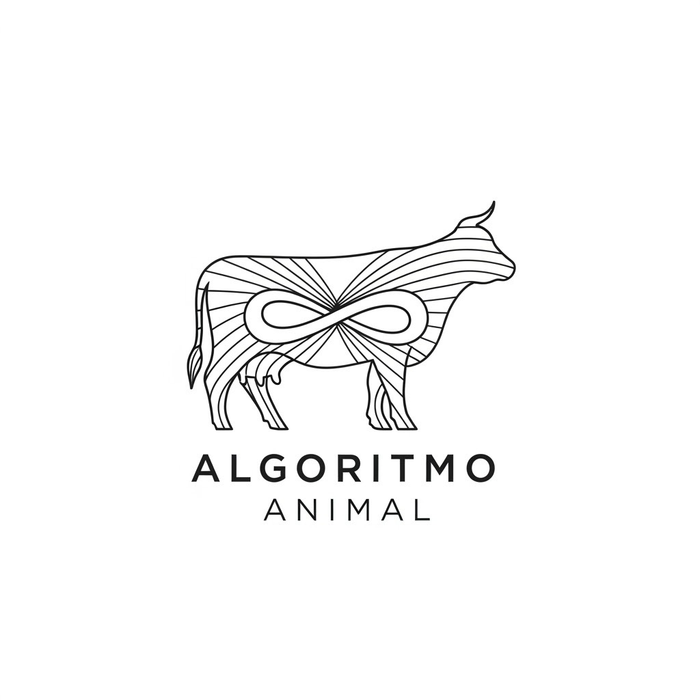
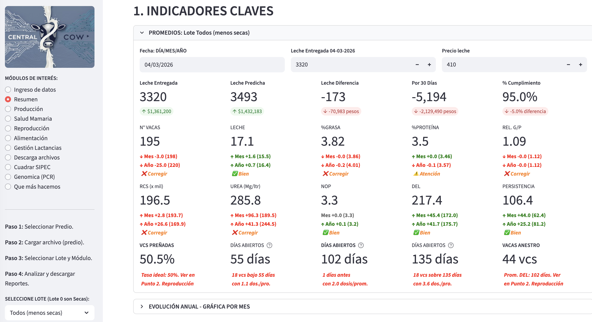
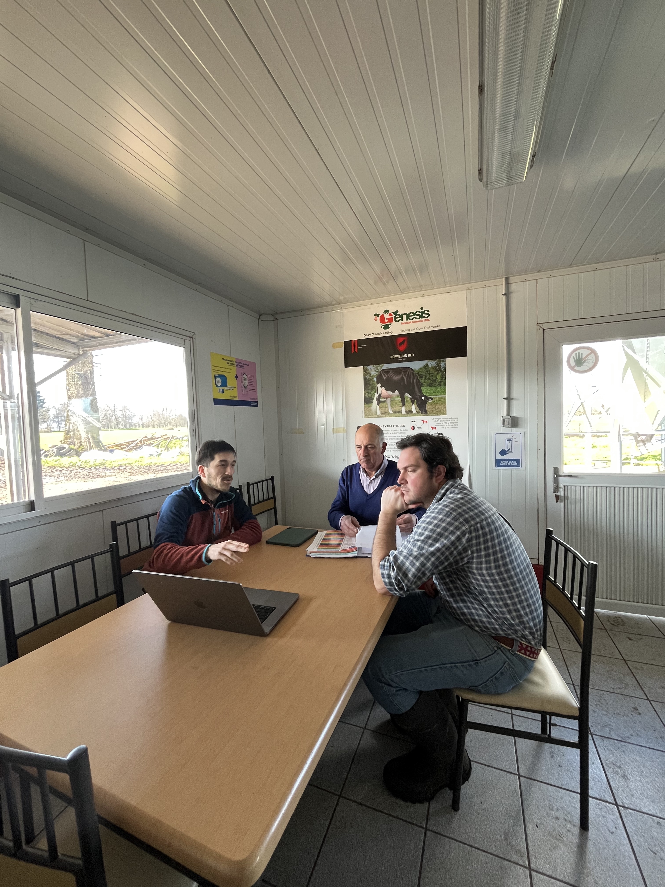
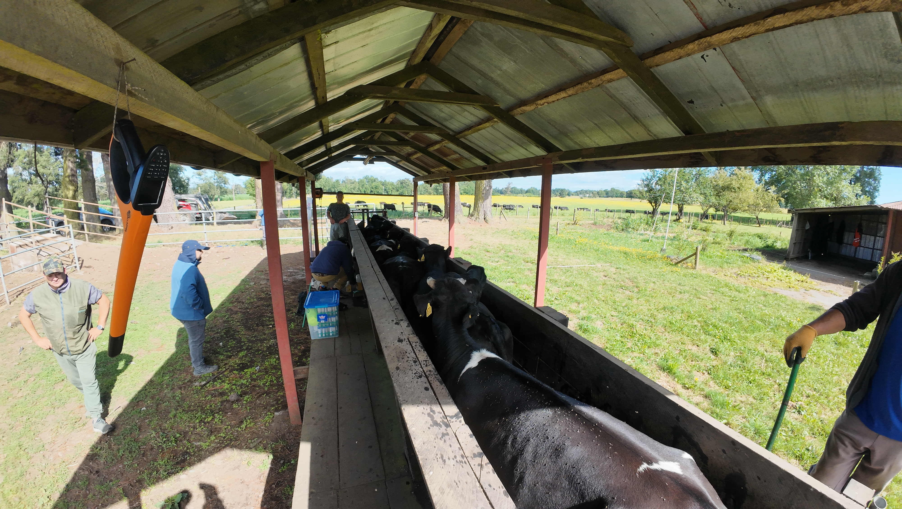
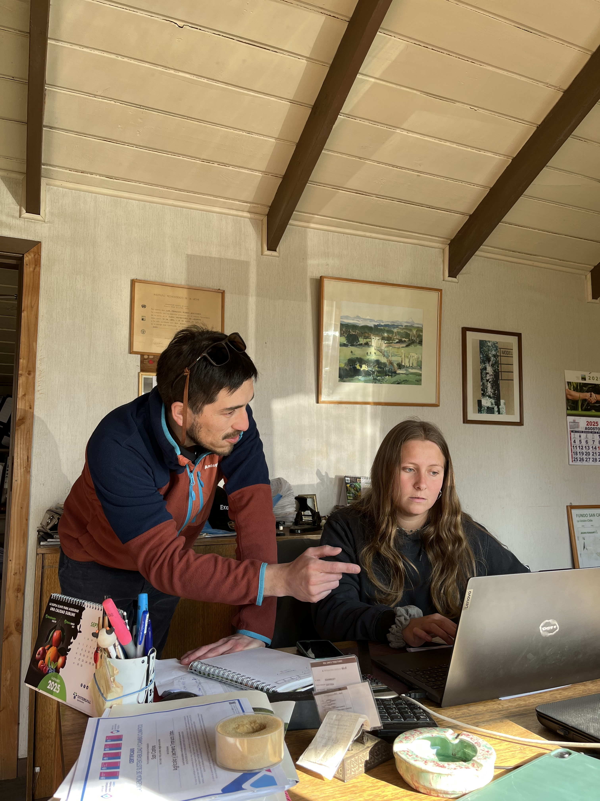

El fin del caos de datos.
El inicio de una ganadería
eficiente.
Ordenamos los datos que ya existen en su lechería para convertirlos en reportes simples, decisiones oportunas y menos horas perdidas.
Agendar diagnóstico¿Pierdes horas en planillas y uniendo datos o reportes?
¿Información incompleta o tarde para manejos del rebaño?
¿Muchos datos pero pocas conclusiones relevantes?
¿Su operación depende en exceso de una sola persona?
¿Usas tus registros solo para consultas y fechas genéricas?
Mucha Tecnología
Poca Información
Referencia externa sobre los desafíos del rubro
Comprar tecnología no siempre significa adoptarla. Cuando los datos quedan aislados, el equipo sigue
trabajando a mano: cruza planillas, interpreta tarde y pierde oportunidades.

El desorden de datos no solo quita tiempo: también fuga dinero
Ejemplos referenciales según escala, producción y nivel de precisión de cada lechería.
Armando y cruzando planillas para reportes simples, insuficientes o atrasados. Muchos datos dispersos.
$4,2 millones/año
en tiempo administrativo
Pérdidas por manejos tardíos, falta de personal, reportes atrasados o fallas de comunicación. Multiplicado por las vacas.
$2,4 millones/año
brecha de $100 mil/día x 24 días
Aprox. 50% del costo es alimento. No integrar datos y fórmulas genéricas son pérdidas. Materia Seca y Precio.
$3 millones/año
100 vacas con brecha del 2%
PLATAFORMA COWNECTA
Copiloto para Lecherías de Precisión
Actuamos como 'puente digital'. Conectamos datos de control lechero, dispositivos, softwares existentes para hacer tres cosas:
- Integrar: conecta fuentes de datos dispersas y reduce horas de trabajo semanal.
- Procesar: aplica algoritmos como analista, con menos errores y sin límite práctico de vacas.
- Simplificar: reportes en pocos clics para tener precisión disponible cuando se necesita.
Simplificamos lo complejo.
"Lo que antes tomaba horas administrativas, profesionales y costos ocultos, ahora se resuelve en minutos con lineamientos ICAR, adaptados a cada campo."
SERVICIOS PARA ORDENAR, AUTOMATIZAR Y DECIDIR MEJOR
Usted conoce el negocio y ya tiene los registros.
Nosotros ayudamos a convertirlos en decisiones claras, reportes útiles y menos reprocesos.
Monitoreo Integrado de Precisión
Control 4.0 para lecherías que buscan eficiencia y optimizar decisiones. Menos tiempo, menos errores, más precisión.
- ⚡ Menos esfuerzo: más decisiones y acciones precisas
- ⚡ Monitoreo: RCS, Productivo, Reproductivo y Alimentación
- ⚡ Ranking de vacas, toros y crías, análisis históricos y tendencias
Automatización y Digitalización
Para PYMES, Cooperativas o Asociaciones con desafíos de integración de datos específicos o complejos.
- ⚡ Soluciones personalizadas y técnicas
- ⚡ Optimice recursos, reduzca jornadas y tiempos de entrega
- ⚡ Análisis específicos, monitoreos y soluciones digitales
Análisis genómicos o genealogía
Esquemas de selección para mejorar características claves adaptado a cada campo con datos propios o biotecnología.
- ⚡ Plan y análisis PCR Leche A2 o Beta-caseína
- ⚡ Plan y análisis PCR Quesos o Kappa-caseína
- ⚡ Selección de madres, vaquillas y toros
Asesoría Integral 4.0 y Sustentabilidad
Para empresas que quieren controlar el uso de recursos y la producción o prepararse para futuras normativas y exigencias.
- ⚡ Diagnóstico y plan de acción
- ⚡ Gestión de registros claves y análisis
- ⚡ Implementación de acciones

Marcos Andrés Fernández
Fundador, Ing. Agr. & Msc. Data Science
Diplomado en C. Climático Silvoagropecuario
Auditor Certificación Sustentabilidad
Nuestra Búsqueda:
Unir la experiencia, los datos y las personas.
Mi pasión fue heredada de mis abuelos. Como profesional, viví en terreno las
complejidades de una empresa lechera. Mi curiosidad por resolver problemas
me llevó a especializarme en ciencia de datos.
Hoy, mis esfuerzos están en facilitar la transición: construir conexiones
entre la práctica y las nuevas tecnologías. Siempre
simple, útil y rentable. Fundamentadas en la ciencia.
"La tecnología debe apoyar a los equipos de trabajo. Los datos deben estar para tomar decisiones ágiles, precisas y óptimas y mejorar la gestión lechera."
Nuestra Empresa
Conoce nuestros principios y objetivos.
Misión
Simplificar la gestión lechera integrando datos, tecnología y análisis práctico para mejorar decisiones, eficiencia y competitividad.
Visión
Ser un referente en monitoreo lechero de precisión en Chile, conectando datos, equipos y tecnologías para un agro más eficiente y sustentable.
Galería de Proyectos
Conozca algunos de los proyectos adjudicados y en marcha de la empresa.

Monitoreo 4.0 Integrado
Análisis inteligente y reportes de precisión

Certificación de Sustentabilidad
Diagnóstico y plan de acción para la empresa

Automatización de procesos
Análisis y generación de informes

Análisis Genómico o Pedigree
Selección por biotecnología o Datos reales

Integración de herramientas
Digitalización, uso de softwares y dispositivos

Asesoría Productiva y Tecnológica
Diagnóstico y apoyo en puntos críticos

Producción de Leche Sostenible
Sistemas lecheros basados en la pradera
Resultados Tangibles
Así es como algunas propuestas han impactado a empresas como la suya.
Cliente: Pyme de Servicios, Región de Los Lagos
Problema: reportes manuales, lentos y propensos a errores.
Solución: automatización de análisis y reportes personalizables para acelerar el flujo de trabajo.
40%
Reducción de horas/semana en trabajo administrativo.
>95%
Disminución de errores de digitación.
24h
Entrega más rápida y pertinente de reportes a clientes finales.
"Ahora entendemos nuestros datos, hemos mejorado la satisfacción de los clientes y tenemos más tiempo para otras tareas."
- Encargado Operaciones
Comunidad y Presencia
La innovación se contagia y la tecnología se enseña. Creemos en la participación activa, el intercambio de conocimientos y la construcción de redes para impulsar el rubro. Solo no se puede.


Desliza para ver más
¿Quieres conectar o invitarme a participar en tu evento?
Conectemos en LinkedInRecursos y Conocimiento
Compartir conocimiento práctico. Revise algunos escritos o descargue el checklist.
Industria Lechera 4.0 en Chile
Nota del Consorcio Lechero: Resumen de cómo la analítica llega a la lechería.
Leer más →5 monitoreos clave en su Lechería
Ir más allá de los litros y fechas. Cómo beneficiarse del uso de sus datos.
Leer más →SIPEC: Cuadratura simple y rápida.
Cómo la tecnología y la digitalización ayudan a estar al día.
Leer más →Checklist para un Monitoreo Lechero
Una revisión para evaluar y mejorar sus procesos de gestión.
Hablemos de sus metas
Conversar no tiene costo. Evaluaremos si podemos ayudar con sus metas y el Retorno de Inversión (ROI) aplicando tecnología.

Disponible para trabajo presencial y remoto
Detalles de Contacto
Nombre: Marcos Fernández
Emails: mf@algoritmoanimal.cloud algoritmoanimalayaspa@gmail.com
Teléfono: +56 930293900